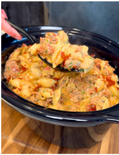

Meat Lovers Pizza Mac & Cheese!!

Description
This is a great meal prep that is high in protien and tastes great.
Its super easy to make and preping takes about 30 mins the full cook time is closer toward 3-4 hours.
Ingredients
Meat & Sauce:
- 900g (32 oz) 93% lean ground Beef
- 120g Chopped turkey pepperoni
- 1 Yellow Onion
- 425g Tomato Sauce
- 1 1/2 Tbsp Italian seasoning
- 1 Tbsp of Salt, Onion powder, Garlic powder, Black pepper
- Dash of chili flakes
- 672g of Pasta
Blended Sauce:
- 800g 2% Cottage Cheese
- 100g Extra Sharp Cheddar Cheese
- 100g Mozzarella Cheese
- 100g Parmigiano Reggiano Cheese
- 360g 1% Milk
- Salt and Pepper to Taste
Steps
- Dice the yellow onion and place in the slow cooker with ground beef, tomato sauce, Italian seasoning, salt, onion powder, garlic powder, black pepper, and chili flakes. Mix to combine. Chop the turkey pepperoni and sprinkle evenly over the top. Cover and cook on high for 2–3 hours or low for 3–4 hours, until the beef is fully cooked and the flavors meld.
- Once the cooking time is complete, break up the ground beef into smaller chunks using a spoon or spatula. Stir everything well to distribute the flavors evenly. While the slow cooker finishes, cook the pasta until halfway done according to package instructions. Drain and set aside.
- Shred the cheddar, mozzarella, Parmigiano Reggiano and add to a blender with 2% cottage cheese and 1% milk. Blend until smooth. Season with salt and pepper to taste.
- Add the partially cooked pasta and blended sauce to the slow cooker. Stir to combine, ensuring the pasta is well coated. Cover and cook on high for 15–20 minutes, or until the pasta is tender and the sauce is thickened.
- Preheat your oven to 400°F (200°C). Line a baking sheet with parchment paper and lay the prosciutto slices on it. Bake for 10–15 minutes, or until the prosciutto is crispy. Remove from the oven and crumble into small pieces.
- Stir gently to mix everything together before dividing into 10 servings.
Home